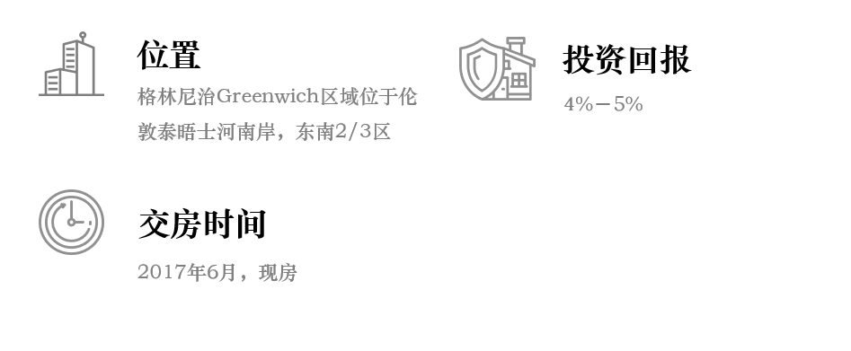

格林尼治Greenwich区域位于伦敦泰晤士河南岸，东南2/3区的位置，与Newham区隔岸相对。
“皇家政区”或许是对Greenwich区域的最高赞誉。2010年，英国女王伊丽莎白二世宣布，格林尼治将成为第四个皇家自治市的区域，与肯辛顿、切尔西和金士顿等传统富人区齐名。其他三个区域都位于伦敦中心地带或西伦敦，唯独格林尼治位于伦敦东南部，可见女王对该区的重视程度。
格林尼治区历史悠久，人文景观丰富，自然风景优美，有众多世界性知名景点，如格林尼治皇家天文台、格林尼治公园、皇家海军学院、国家海洋博物馆、埃尔特姆宫、英国的千年穹顶（O2体育馆）等，每年接待游客众多，是世界性知名旅游城市，每年接待大量来自世界各地的游客。
格林尼治区不仅有众多旅游景点，平日里还可以去伦敦著名的格林尼治集市Greenwich maket。
另外，位于格林尼治区的O2娱乐中心绝对是休闲娱乐最佳目的地，拥有O2体育场、剧院、酒吧、餐厅和电影院等等。闲暇之时在这里逛上一天都不会觉得累。
格林尼治皇家政区是伦敦优质学校最多的区域之一，其水平与西区里士满（Richmond）不相上下。很多表现杰出“outstanding”的学校在该区域，比如位于John Harrison Way的Millennium小学，前前任英国首相布莱尔曾在2007年参访过该杰出学校。同时，前伦敦市长鲍里斯·约翰逊曾在2013年参访过杰出小学Tidemill。该区域小学数量众多，将近70所。